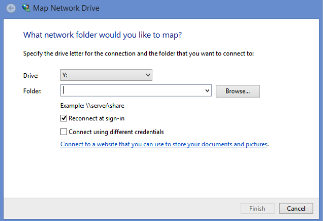

Configurar WebDAV per a Windows 8
Nota: Ha d'haver almenys un objecte (fitxer, carpeta, etc.) als recursos de l'espai abans de començar la configuració. Aquesta configuració és necessària per a cada espai de la plataforma si es vol usar el protocol WebDav per transferir fitxers de l'ordinador a l'espai o entre espais.
- En primer lloc navegue al escriptori: després de iniciar sessió en Windows 8, clic en la icona Escriptori.
- Desde l'escriptori, clic en l'explorador d'arxius.

- En la part superior de l'explorador d'arxius, clic sobre Equipo > Conectar a unidad de red.

- Seleccione una lletra d'unitat lliure (per exemple, Y:) de la llista d'unitats.

- En el apartat Carpeta, escriga (o copie y pegue) la direcció URL del lloc mostrat en el pas 1 i feu clic en Finalitzar.
- En la finestra emergent, ha d'introduir el seu usuari i la clau de la plataforma i fer clic en aceptar.
- Ja pots copiar i pegar o arrastrar arxius i carpetes desde el teu ordenador cap a esta nova unitat. Els arxius serán accesibles desde la ferramenta recursos del lloc dins de la plataforma.
Configuració WebDAV per a Windows Vista/Windows 7
Nota 1: Ha d'haver almenys un objecte (fitxer, carpeta, etc.) als recursos de l'espai abans de començar la configuració. Aquesta configuració és necessària per a cada espai de la plataforma si es vol usar el protocol WebDav per transferir fitxers de l'ordinador a l'espai o entre espais.
Nota 2: Per usar WebDAV a Windows Vista és necessari tenir instal·lat Service Pack 2. Si no teniu Service Pack 2 instal·lat, heu d'executar Windows Update fent clic sobre Inici > Tots els programes > Windows Update.
- Desde l'escriptori o menú inici, feu clic sobre El meu PC o Equip.
- Desde la part superior de la finestra, feu clic sobre Connecta a una unitat de xarxa.
- Seleccioneu una letra d'unitat lliure (i.e., Z) de la llista d'Unitats.
- A l'apartat Carpeta, escriviu (podeu copiar i enganxar) la URL d'aquest espai que apareix al pas 1 i feu clic sobre Finalitza.
- A la finestra emergent, heu d'introduir l'usuari i la clau de la plataforma i fer clic sobre Accepta. RECORDEU QUE HEU DE TINDRE OBERTA UNA SESIÓ AUTENTICADA A LA PLATAFORMA EN AQUEST USUARI.
- A partir d'aquest moment podeu copiar i enganxar o arrossegar fitxers i carpetes des del vostre ordinador cap a la unitat nova. Els fitxers seran accesibles des de l'eina de recursos de l'espai dins de la plataforma.
Quan el procés de configuració acabi, els recursos de l'espai apareixeran a una unitat dins de El meu PC o Equip, i es comportarà com qualsevol disc dur dins de Windows.
Mètode alternatiu per configurar WebDAV a Windows Vista o Windows 7 usant Cyberduck
Nota:: Ha d'haver almenys un objecte (fitxer, carpeta, etc.) als recursos de l'espai abans de començar la configuració. Aquesta configuració és necessària per a cada espai de la plataforma si es vol usar el protocol WebDav per transferir fitxers de l'ordinador a l'espai o entre espais.
- Seguint les instruccions detallades al Pas 1 de la opció transfereix múltiples fitxers localizarem l'enllaç que necessitem per a configurar la conexió.
- Accediu a la web de Cyberduck: http://cyberduck.ch
- Feu clic sobre l'enllaç Descargar
- Executeu el fitxer install.exe i completeu l'assistent d'instal·lació.
- Obriu l'aplicació Cyberduck des de la carpeta Aplicacions.
- Feu clic sobre el botó Nova Conexió.
- Seleccioneu WebDAV (HTTP/SSL)
- Al camp Servidor escriviu: hostname
- Al camp Port escriviu: 443
- Introduiu el vostre usuari i la clau de la plataforma. RECORDEU QUE HEU DE TINDRE OBERTA UNA SESIÓ AUTENTICADA A LA PLATAFORMA EN AQUEST USUARI PER A QUE WebDav TE FUNCIONE.
- Premeu Més opcions i escriviu (o copieu i enganxeu) a Camí el final de l'adreça URL del pas 1: dav/xxxx-xxxx-xxxx.
- Feu clic sobre el botó Connecta.
Ara apareixerà una finestra que representa els recursos que teniu a l'espai de la plataforma. Podeu copiar i enganxar o arrossegar des de les vostres finestres del finder cap a aquesta nova finestra per transferir els fitxers a recursos de l'espai dins de la plataforma.
Mètode alternatiu per configurar WebDAV a Windows Vista o Windows 7 usant AnyClient
Si el procés descrit anteriorment dóna problemes de connexió, es pot usar un client de WedDAV gratuït anomenat AnyClient. Seguiu els passos següents per baixar i configurar aquest client.
- Accediu a la web de AnyClient: http://www.anyclient.com.
- Feu clic sobre l'enllaç Download Now.
- Executeu el fitxer install.exe i completeu l'assistent d'instal·lació.
- Si la instal·lació no inicia automàticament el programa AnyClient, feu clic sobre Inici > Tots els programes > AnyClient > AnyClient per executar AnyClient.
- Feu clic sobre Connect a la part inferior esquerra.
- Feu clic sobre New a la part inferior esquerra i poseu un nom de connexió relacionat amb el vostre espai dins de la plataforma (per exemple, Recursos de Didàctica de l'educació) i feu clic sobre Next.
- A l'apartat de Host, escriviu (o copieu o enganxeu) la URL d'aquest espai que apareix al pas 1 i feu clic a Finalitza.
- Heu d'introduir el vostre usuari i clau de la plataforma. RECORDEU QUE HEU DE TINDRE OBERTA UNA SESIÓ AUTENTICADA A LA PLATAFORMA EN AQUEST USUARI.
- A l'apartat de Connection type, seleccioneu WebDAV.
- Feu clic sobre Save a la part inferior de la finestra si voleu recordar les dades per futures connexions i feu clic a Connecta.
- Una vegada obert el programa AnyClient, seleccionarem la carpeta on volem que s'ubiquen els documents descarregats.
- Una vegada ja seleccionada la ubicació on volem que s'allotgen, seleccionarem l'arxiu que vullguem descarregar, i farem click a la imatge de la fletxa verda que diu 'Download', i directament es descarregarà en la ubicació que hem seleccionat anteriorment.
Configuració WebDAV per a Mac (OS 10.4 - 10.6)
Nota 1: Segons la versió del seu sistema operatiu l'ús de Finder pot ser erràtic. Si us dóna problemes recomanem que useu Cyberduck.
Nota 2: Ha d'haver almenys un objecte (fitxer, carpeta, etc.) a l'eina Recursos de l'espai abans de començar la configuració. Aquesta configuració és necessària per a cada espai de la plataforma si es vol usar el protocol WebDav per transferir fitxers del seu ordinador a l'espai o entre espais.
- Des del menú de la part superior del Finder, seleccioneu Ves a > Connectar-se al servidor.
- Al camp Adreça del servidor, introduïu (o copieu i enganxeu) l'adreça URL que apareix a la part superior d'aquesta pàgina.
- Feu clic sobre el botó + si voleu desar aquesta adreça URL per a accessos futurs.
- Feu clic sobre Connecta.
- Introduiu el vostre usuari de la plataforma y la clau i feu clic sobre Connecta. RECORDEU QUE HEU DE TINDRE OBERTA UNA SESIÓ AUTENTICADA A LA PLATAFORMA EN AQUEST USUARI.
Al Mac apareixerà una finestra que representa els recursos que teniu al vostre espai. Podeu copiar i enganxar o arrossegar des de les vostres finestres del finder cap a aquesta nova finestra per transferir els fitxers a l'eina recursos de l'espai.
Configuració WebDAV per a Linux (Gnome)
- Anem a Archivos > Conectar con el servidor...
- En Direcció de servidor introduïm la direcció: davs://xxxx/dav/xxxx
- Click al botó Conectar.
- Al conectar li apareixerá una finestra demanant la clau de la plataforma.
Cuando el proceso de configuración está completo, la carpeta de recursos del sitio aparecera en Archivos, y actuará como una carpeta normal dentro de Linux. Ahora podemos copiar, pegar, arrastrar todo tipo de ficheros y carpetas de nuestro ordenador a esta nueva carpeta.
Configuració WebDAV per a Linux (Gnome) versions anteriors
- Aneu a Llocs > Connecta't a un servidor...
- Al desplegable Tipus de servei seleccioneu WebDav .
- Al camp Servidor introduïu (o copieu i enganxeu): hostname.
- Al camp Port introduïu (o copieu i enganxeu): 80.
- Al camp Carpeta introduïu (o copieu i enganxeu) el final de l'adreça URL del pas 1: dav/xxxx-xxxx-xxxx
- Marqueu l'opció Afegeix l'adreça d'interès
- Al camp Nom de l'adreça d'interès introduïu el nom de la carpeta que se crearà dins de Xarxa i que farà referència al vostre espai de la plataforma (per exemple, Recursos de Didàctica de l'educació) i feu clic a Següent.
- Premeu el botón Connecta.
- Al connectar apareixerà una finestra sol·licitant la clau de la plataforma.RECORDEU QUE HEU DE TINDRE OBERTA UNA SESIÓ AUTENTICADA A LA PLATAFORMA EN AQUEST USUARI.
Quan s'hagi completat el procés de configuració, la carpeta de recursos de l'espai apareixerà a Llocs, i actuarà com una carpeta normal dins de Linux. Podreu copiar, enganxar i arrossegar tot tipus de fitxers i carpetes del vostre ordinador cap a aquesta nova carpeta.
Configuració WebDAV per a Linux (KDE)
- Obriu el gestor de fitxers (Dolphin).
- A la part esquerra, a Llocs seleccioneu Xarxa.
- A continuació premeu Afegeix una carpeta de xarxa.
- Marqueu Carpeta Web (webdav) i premeu Següent.
- Al camp Nom introduïu el nom de la carpeta que es crearà dins de Xarxa i que farà referència al vostre espai a la plataforma (per exemple, Recursos de Didàctica de l'educació) i feu clic a Següent.
- Al camp Usuari introduïu el vostre usuari a la plataforma.
- Al camp Servidor introduïu (o copieu i enganxeu): hostname.
- Al camp Carpeta introduïu (o copieu i enganxeu) el final de l'adreça URL del paso 1: dav/xxxx-xxxx-xxxx.
- Si l'adreça és HTTPS marqueu l'opció Xifrada, al fer-ho el port canviarà automàticament a 80.
- Amb l'opció Crea una icona per a aquesta carpeta remota, fareu que es desin totes les dades i no les haureu de tornar a introduir.
- Premeu el botó Desa i connecta.
- Al connectar apareixerà una finestra sol·licitant la clau de la plataforma. RECORDEU QUE HEU DE TINDRE OBERTA UNA SESIÓ AUTENTICADA A LA PLATAFORMA EN AQUEST USUARI.
Quan s'hagi completat el procé de configuració, la carpeta de recursos de l'espai apareixerà a Xarxa dins del gestor de fitxers (Dolphin), i funcionarà com una carpeta normal dins de Linux. Podreu copiar, enganxar i arrossegar tot tipus de fitxers i carpetes dels vostre ordinador a aquesta nova carpeta.
Configuració WebDAV per a Linux (mode consola)
- Obriu un terminal.
- Escriviu la instrucció cadaver i com a opció l'adreça URL del pas 1.
- Pot ser que el programa us sol·liciti que accepteu el certificat de la vostra institució.
- Haureu d'autenticar-vos amb el vostre usuari i clau de la plataforma. RECORDEU QUE HEU DE TINDRE OBERTA UNA SESIÓ AUTENTICADA A LA PLATAFORMA EN AQUEST USUARI.
- Podeu ara pujar i baixar documents usant la línia de comandes.
Escriviu help per veure les opcions disponibles.
Configuració per a Windows XP
Nota: Ha d'haver almenys un objecte (fitxer, carpeta, etc.) als recursos de l'espai abans de començar la configuració. Aquesta configuració és necessària per a cada espai de la plataforma si es vol usar el protocol WebDav per transferir fitxers de l'ordinador a l'espai o entre espais.
- Feu clic dos cops sobre la icona Els meus llocs de xarxa a l'escriptori o feu clic a Inici > Els meus llocs de xarxa.
- Feu clic sobre Afegeix un lloc de xarxa al menú de l'esquerra.
- Feu clic sobre Següent.
- Assegureu-vos que l'opció Escull una altra ubicació de xarxa estigui seleccionada i feu clic sobre Següent.
- Al camp Adreça de xarxa o Internet, escriviu (podeu copiar i enganxar) la URL de l'espai que apareix al pas 1 i feu clic sobre Següent.
- Apareixerà una pantalla a on heu d'introduir l'usuari i la clau de la plataforma i fer clic sobre Accepta. RECORDEU QUE HEU DE TINDRE OBERTA UNA SESIÓ AUTENTICADA A LA PLATAFORMA EN AQUEST USUARI
- Podeu afegir un nom per la carpeta que es crearà dins de Els meus llocs de xarxa que farà referència al vostre espai de la plataforma (per exemple, Recursos de Didàctica de l'educació) i feu clic sobre Següent.
- Feu clic sobre Finalitza per completar la configuració.
Quan el procés de configuració s'hagi completat, la carpeta de recursos de l'espai apareixerà a Els meus llocs de xarxa, i funcionarà com una carpeta normal dins de Windows. Ara podreu copiar, enganxar o arrossegar tot tipus de fitxers i carpetes del vostre ordinador a aquesta nova carpeta.
Configuració de WebDAV per a Mac usant Cyberduck
Nota:: Ha d'haver almenys un objecte (fitxer, carpeta, etc.) als recursos de l'espai abans de començar la configuració. Aquesta configuració és necessària per a cada espai de la plataforma si es vol usar el protocol WebDav per transferir fitxers de l'ordinador a l'espai o entre espais.
- Cal baixar el client WebDAV Cyberduck.
- Per a Mac OS X versió 10.5 i superiors, baixeu la versió más recent de: http://cyberduck.ch/.
- Per a Mac OS X i versions anteriors a 10.5, baixeu el client WebDAV Cyberduck de: http://update.cyberduck.ch/Cyberduck-2.8.5.dmg.
- Baixeu el client WebDAV Cyberduck de: http://cyberduck.ch.
- Descomprimiu el fitxer i feu clic dos cops sobre el fitxer .dmg. (Depenent de la configuració del programa que descomprimeix, la imatge es muntarà automàticament al disc).
- Una imatge de disc anomenada Cyberduck-2.8.5 ha d'estar ara disponible. Arrossegueu la imatge de disc fins a la vostra carpeta d'Aplicacions.
- Obriu l'aplicació Cyberduck des de la carpeta Aplicacions.
- Feu clic sobre el botó Nova connexió.
- Seleccioneu WebDAV.
- Al camp Servidor escriviu (o copieu i enganxeu): hostname.
- Al camp Port escriviu (o copieu i enganxeu): 80.
- Introduiu el vostre usuari i la clau de la plataforma. RECORDEU QUE HEU DE TINDRE OBERTA UNA SESIÓ AUTENTICADA A LA PLATAFORMA EN AQUEST USUARI.
- Premeu Més opcions i escriviu (o copieu i enganxeu) a Camí el final de l'adreça URL del pas 1: dav/xxxx-xxxx-xxxx.
- Feu clic sobre el botó Connecta.
Al Mac apareixerà una finestra que representa els recursos que teniu a l'espai de la plataforma. Podeu copiar i enganxar o arrossegar des de les vostres finestres del finder cap a aquesta nova finestra per transferir els fitxers a recursos de l'espai dins de la plataforma.